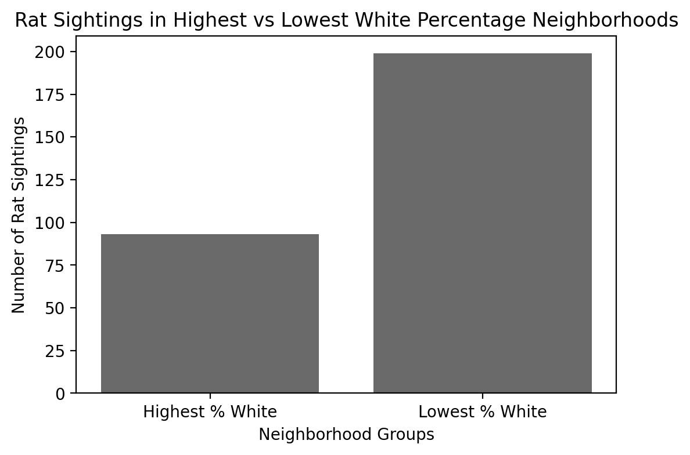

Takeaway: These charts show the racial demographic
distribution for each Boston neighborhood. Each racial group and its
corresponding percentage of population for each neighborhood is
displayed, and this gives us the ability to do some preliminary analysis
about racial concentrations in Boston, and provides context for Boston’s
racial makeup. White people make up the largest portion of most Boston
neighborhoods, with highest proportions in neighborhoods like
Charlestown, South Boston, and Beacon Hill. Black people make up the
largest proportion in neighborhoods like Mattapan and Roxbury. Hispanic
people make up the largest proportion in East Boston and Roxbury.
Finally Asian people make up the largest proportion in Downtown and
Allston. These charts reveal Boston’s varied racial demographics
throughout the city and reaffirm the value of evaluating our rodent
occurrence metrics separately for different neighborhoods; each
neighborhood is vastly different in terms of ethnicity and have diverse
populations.
Race Bar Chart by Neighborhood
üîç Interactive!
Hover over each bar segment to see the neighborhood
name and the race group’s percentage.
This stacked bar chart shows the
racial composition of every Boston neighborhood.
Compare racial diversity across communities and look for standout
trends or imbalances.
Takeaway: This graph explores the racial makeup of each
neighborhood in Boston. It shows that the neighborhoods with the highest
percentage of White population are Beacon Hill, South Boston, and
Charlestown. Additionally, Downtown has the highest Asian population,
East Boston has the highest Hispanic population, and Mattapan has the
highest Black population. It is clear that each neighborhood is
different, with no clear pattern of one racial group being the majority
in every neighborhood. The key takeaway of this is that there is a lot
of variation among Boston neighborhoods, but not necessarily within
them.
2. Rat Reports by Neighborhood
üîç Interactive!
Hover over
each bar plot to view values regarding cases per capita, population,
neighborhood, and income group.
Takeaway: This graph shows the per capita
occurrences of rodent cases for each neighborhood in Boston. This
graph accounts for population variance in each neighborhood by
determining the number of rat occurrences per person. The data seems
to be centered around approximately .007 rodent cases per capita,
with 11/20 neighborhoods falling between .004 and .01 rodents per
capita. The graph reveals that Back bay, Downton, and South End have
the highest per capita rodent cases, all above 0.012. Notably,
Allston, Brighton, Fenway/Kenmore, and South Boston all have per
capita values below .003. The takeaway from this graph is that many
neighborhoods have a similar rodent occurrences per capita value,
but there are some notably low and high rodent values that may
indicate potential public health and sanitation disparities among
Boston neighborhoods.
Takeaway: This graph shows the per capita
occurrences of rodent cases for the highest income neighborhoods in
Boston and the lowest income neighborhoods in Boston. The income
groups are determined by the 3 highest and 3 lowest median income
neighborhoods in Boston. The high income group had a rodent
occurrence per capita value of .0096, more than .003 higher than the
low income groups value of .0063. One potential takeaway from this
graph is that high income neighborhoods tend to be situated in rat
prone geographical locations. It may also reveal a social pattern of
higher income individuals, and a higher likelihood to report rodent
occurrences using Boston’s 311 system.
Aggregate Race Group Comparisons

Takeaway: This series of graphs explores rat sightings
in different neighborhoods based on their racial makeup. The graphs
exploring the neighborhoods with the highest and lowest Black, Asian,
and Hispanic populations all follow the same pattern: the neighborhoods
with more of those populations have more rat sightings, and the
neighborhoods with less of those populations have less rat sightings.
The graph that explores the rat sightings in the highest and lowest
White neighborhoods show the opposite: the top three percent White
neighborhoods have lower rat sightings than the bottom three percent
White neighborhoods. This concludes that the higher the percentage of
White people in the neighborhood, the lower the count of rat sightings.
3. Case Completion Analysis
üîç Interactive!
Hover over
each box plot to view values as well as the outliers to view
comepleteion time .
Takeaway: This graph compares the distribution of
case time completion for high and low income neighborhoods. The income
groups are determined by the 3 highest and 3 lowest median income
neighborhoods in Boston. We can see that the minimum, center, and IQR
placement for both groups are very similar with medians around ~23
hours. The main difference between these graphs are the outliers in
the low income group. There are 3 rodent occurrence instances that all
have completion times above 1000 hours in Roxbury. This potentially
indicates a systemic disparity between public health and sanitation
practices for low income neighborhoods. This graph suggests, however,
that there is no real difference between case completion distribution
for low and high income neighborhoods.
üîç Interactive!
Hover over
each bar segment to see the income group and percentage of not
completed cases.
Takeaway: This graph shows the percentage of rodent
occurrence cases that were not completed for the low and high income
neighborhoods. The income groups are determined by the 3 highest and 3
lowest median income neighborhoods in Boston. We can see that there is
a higher rate of non-completion for low income neighborhoods, with a
rate of .92% and .72% non-completion for the low and high income
neighborhoods respectively. Still these rates are below 1% and very
low, thus implying that non-completion is not a large issue for either
income bracket.
üîç Interactive!
Hover over
each bar segment to see the neighborhood name and percentage of not
completed cases.
Takeaway: This graph shows the percentage of rodent
occurrence cases that were not completed for each neighborhood. All
neighborhoods have a very low not completed rate, ranging 0.2% to
3.3%. The neighborhood with the highest not completed rate is South
Boston. The neighborhoods with the lowest rates are Dorchester and
Back Bay. This indicates that some neighborhoods may have disparate
access to 311/sanitation/animal control government personnel, but it
doesn’t appear that any neighborhoods are severely unequally treated
by this metric.
Average Resolution Times per Neighborhood Map
üîç Interactive!
Hover over for neighborhood name and average
resolution time (hours).
Pan and zoom across Boston to explore rodent case
average resolution times by neighborhood.
Takeaway: This map shows the average resolution times
in hours for the cases per neighborhood. The darker color represents a
longer resolution time and the lighter colors represent shorter
resolution times. The darkest red shows resolution times that took over
46 hours, or nearly two days. The neighborhoods that had this average
time were Jamaica Plain, Roxbury, Mattapan, and Downtown. The lightest
yellow indicates neighborhoods with average resolution times between
30-35 hours. These neighborhoods were Dorchester, South Boston, East
Boston, and Allston. This could indicate a few things. Either these
neighborhoods closer to the downtown area see more rat incidences, or
resources are diverted to the lighter yellow areas.
Majority Race per Neighborhood Map
üîç Interactive!
Hover over each neighborhood to see the race makeup
percentage.
Pan and zoom across Boston to compare to average
resolution time map.
Takeaway: This map shows the majority race that resides
in each neighborhood. The legend only includes Black, Hispanic, and
White labels because these are the only majorities that exist, but this
does not mean that people of other races do not live in these
neighborhoods. From the map, we gather that Black people are
concentrated in Roxbury, Mattapan, Dorchester, and Hyde Park. East
Boston has as majority Hispanic population. All of the other
neighborhoods have a majority White population. This shows some overlap
with the previous map: neighborhoods with more people of color
experience slower resolution times. Some neighborhoods that have a
designated majority white population may still experience slower
resolution times because those places could also have more rats to begin
with.
Interactive Rodent Incident Map
üîç Interactive!
Pan and zoom across Boston to explore rodent
reports by neighborhood.
Click on any dot to reveal case-level details like
ID, street, and ward.
Look for clusters to spot high-activity areas and
possible rodent hotspots.
Takeaway: This map visualizes the geographic
distribution of rodent-related 311 cases across Boston. Each dot
represents an individual report allowing for immediate identification of
spatial clusters and neighborhood-specific patterns. Denser
concentrations of reports in certain areas suggest localized rodent
issues that may correlate with population density, income, or
infrastructure conditions. Notably there appears to be a more condensed
cluster in neighborhoods like the South End, the North End, and South
Boston. In other neighborhoods like Mission Hill, Fenway, and
Dorchester, the rodent cases look more evenly spread out but prevelant.